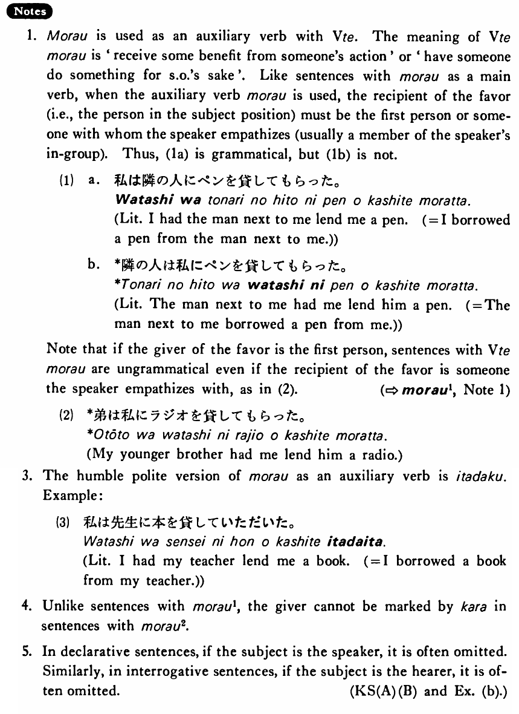

←
DoJG
→
もらう (2)
(B. 263)
Example sentences
(ksa).
（私は）父にカメラを買って
もらった・もらいました
。
My father bought a camera for me.
(ksb).
（私は）友達に来て
もらった・もらいました
。
I had my friend come (for my benefit).
(a).
木村さんは大野さんに車を貸して
もらった
。
Mr. Kimura had Mr. Ono lend him his car.
(b).
（君は）ベックさんに何をして
もらいました
か。
What did you have Mr. Beck do for you? / What did Mr. Beck do for you?
(c).
ジョンソンさんは鈴木さんに日本語を教えて
もらっている
。
Mr. Johnson has Mr. Suzuki teaching him Japanese.
Formation
Vて
もらう
話して
もらう
Have someone talk for my sake
食べて
もらう
Have someone eat for my sake
